Engineer, builder, and researcher focused on intelligent
systems, autonomous infrastructure, and the future of computing.
Currently building. Always learning.
The best way to understand a system is to build one.
Determinism is a moral position, not a technical one.
Most breakthroughs begin as side projects.
"I'm not the most specialized engineer
in any room. But I'll still be building
at 2 a.m. because the problem remains unsolved."
"I'm not the most specialized engineer in any room. But I'll still be building at 2 a.m. — because the problem remains unsolved."
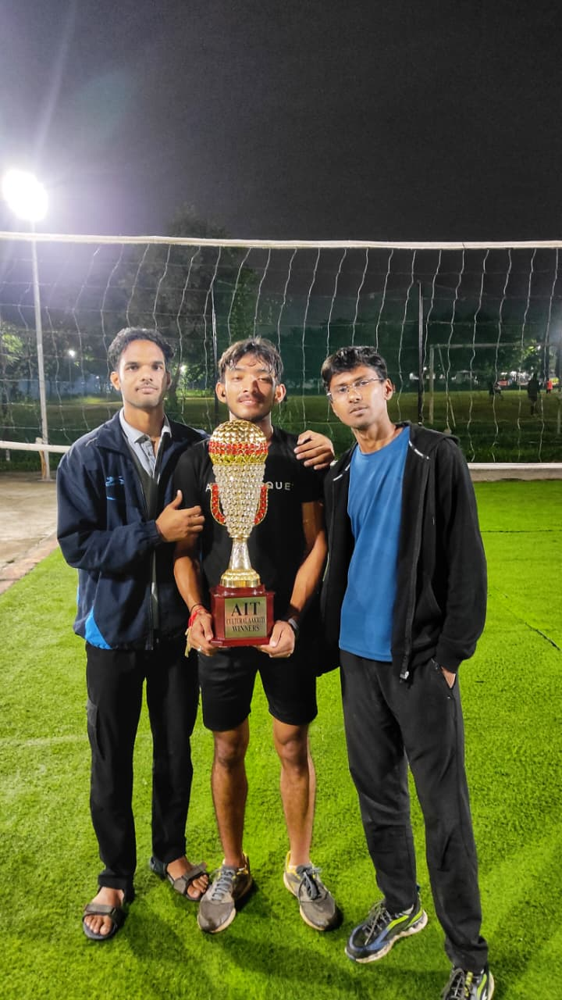
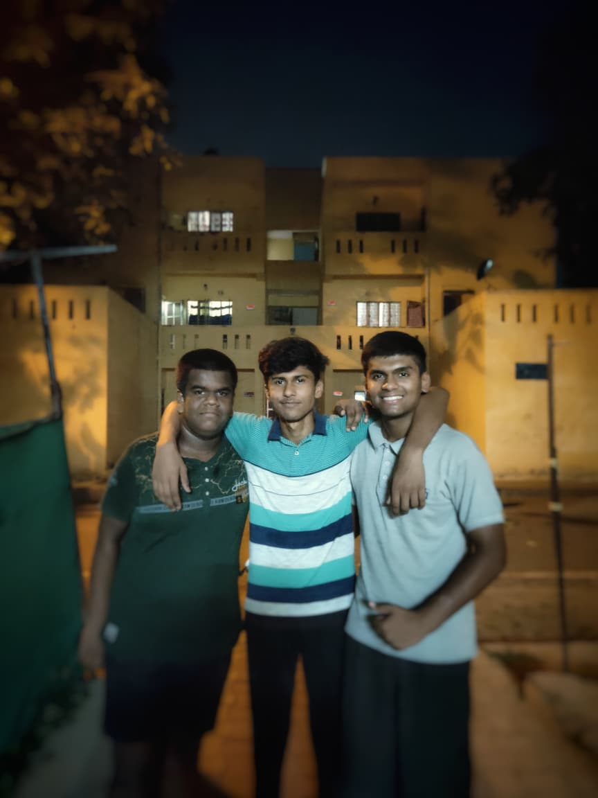
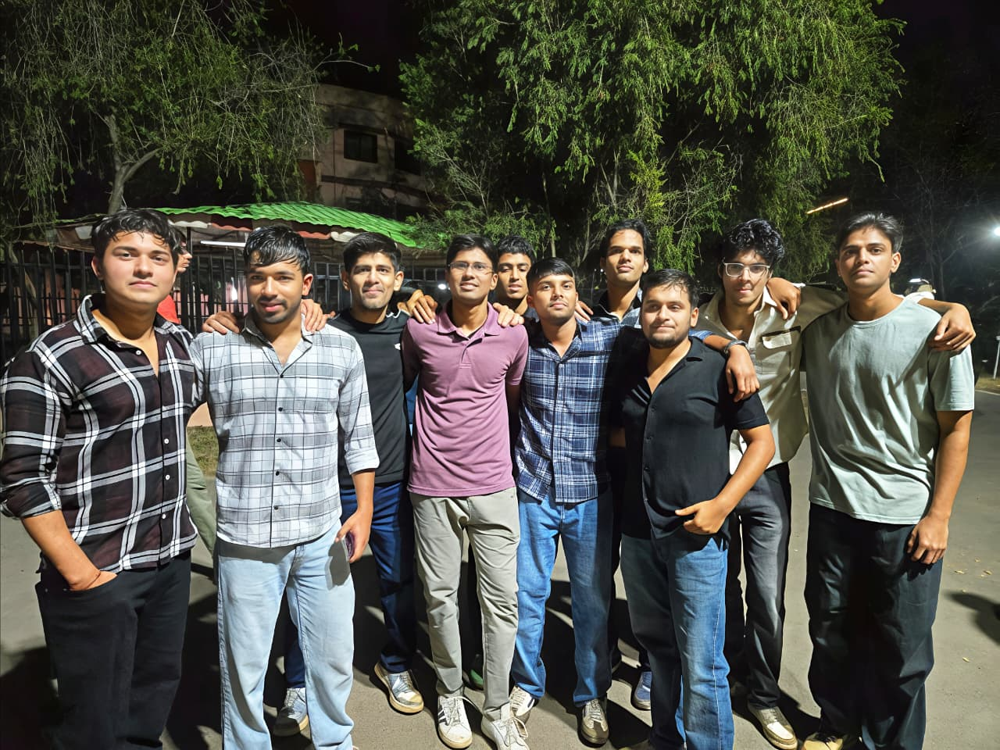
"It doesn't matter where
you start, it's how you
build from there."
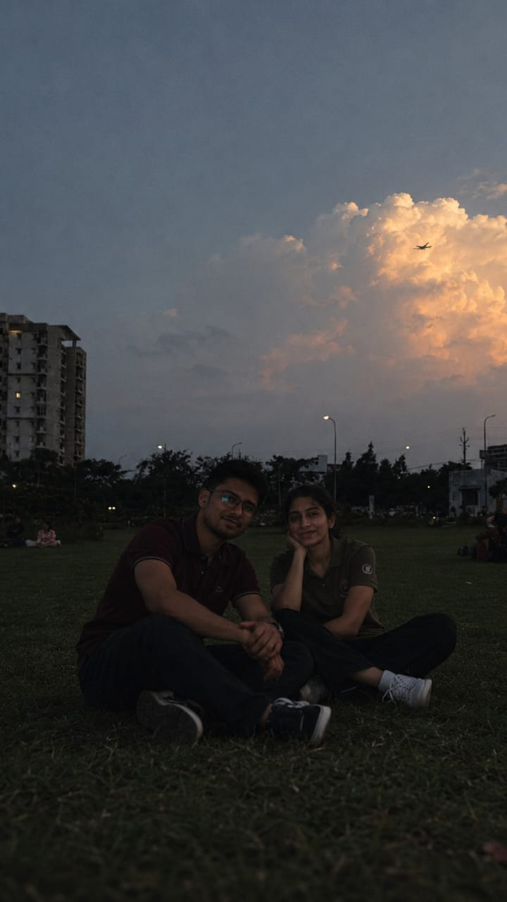
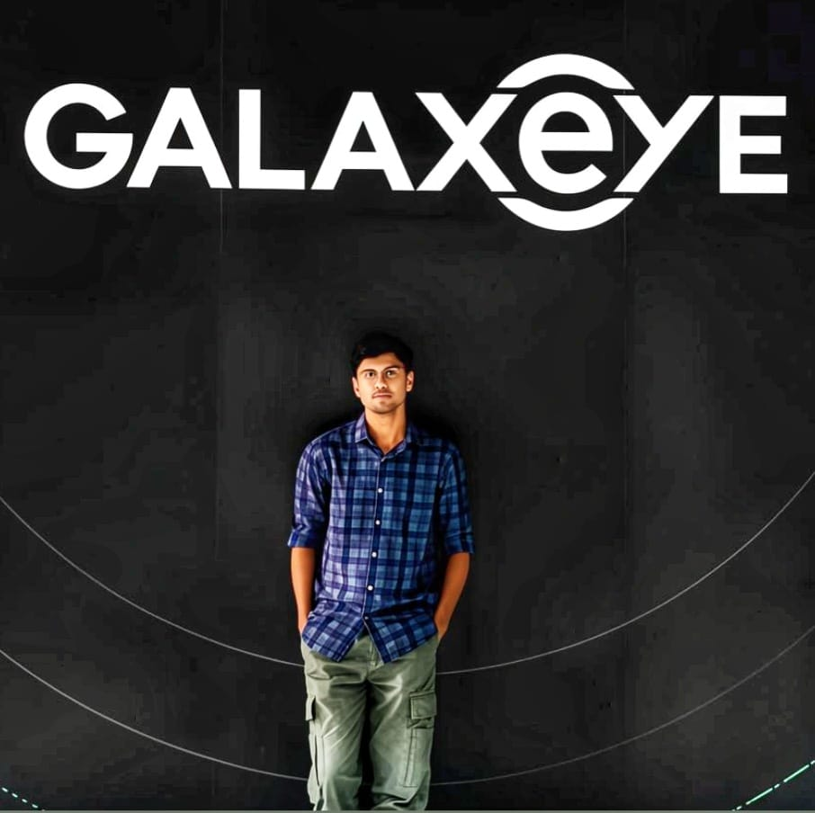
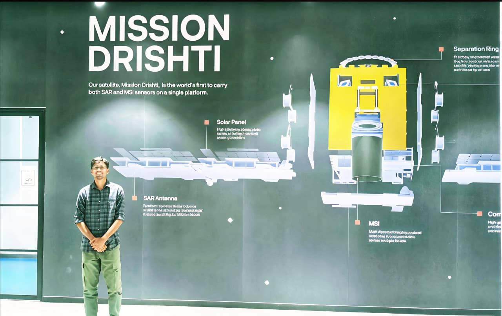
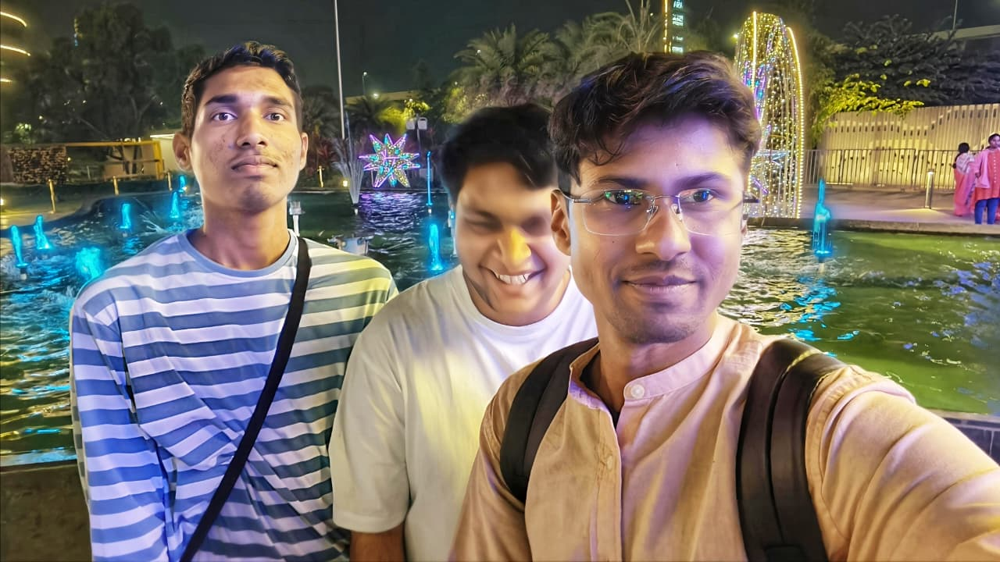
"Hardware-aware AI is going
to matter more than
bigger models."
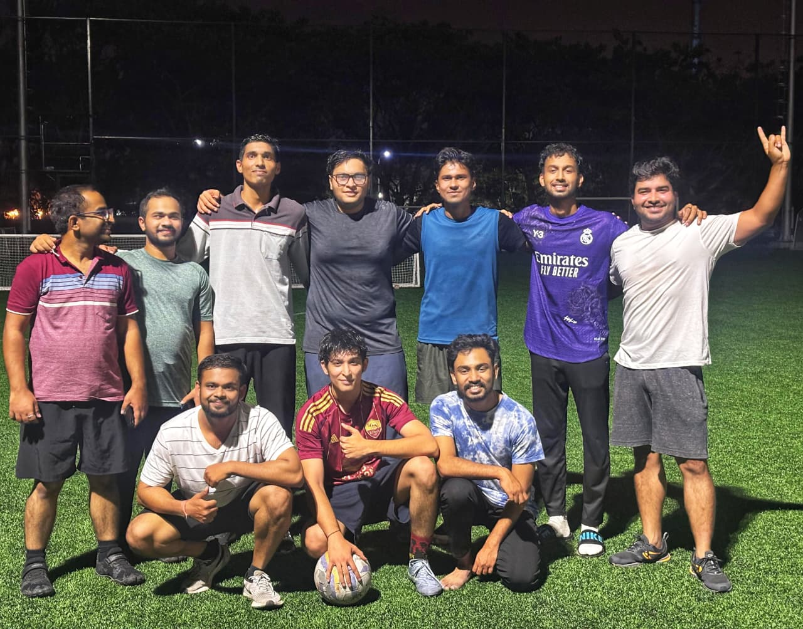
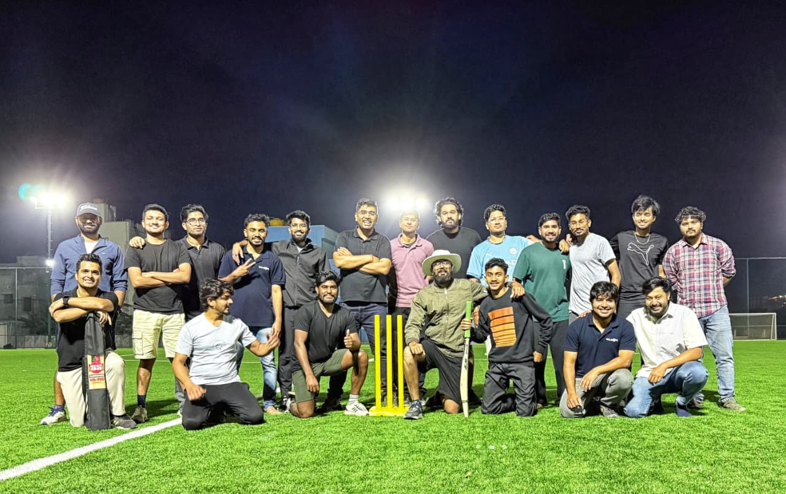
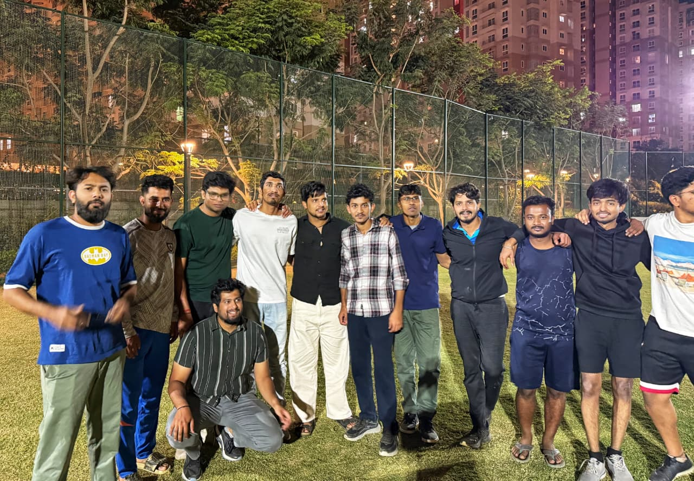
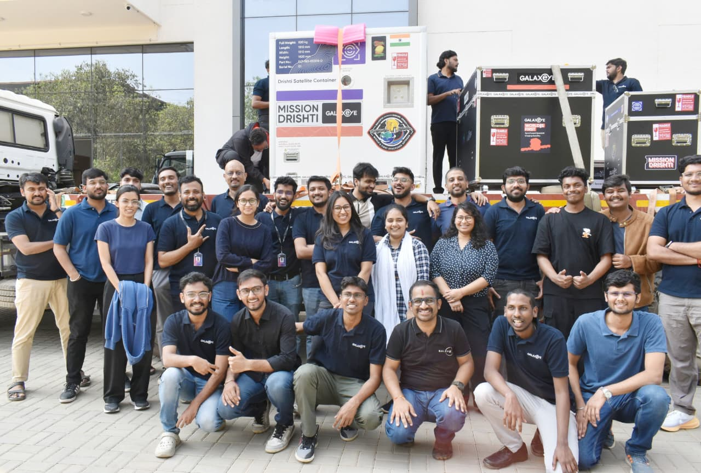
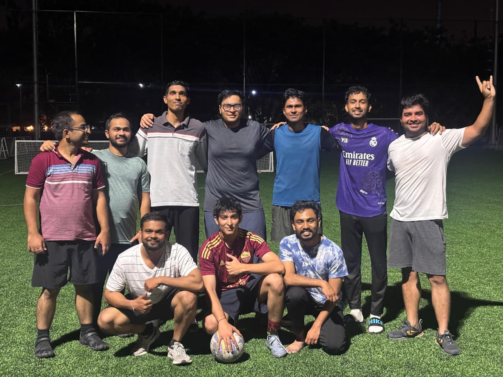
The full layer cake — from bare metal to deployed product.
MOMENTS THAT
Defined Me.
AI Chief-of-Staff for startup founders that processes operational communication across Gmail and Slack to generate focused executive briefings and decision summaries.
The most interesting opportunities often begin as conversations.
Whether you're building a company, exploring new technologies, conducting research, or simply exchanging ideas, I'm always interested in meeting people who care deeply about what they do.
If you're working on something ambitious and believe I can contribute, I'd love to hear from you.